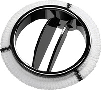

In-vitro Pulsatile Flow Environment for Blood Clot Growth Characterization near Bileaflet MHVs (TGT 2.0)
Senior Design Project - In Progress
Background
Mechanical Heart Valves (MHVs) are lifesaving implants but pose a significant risk of thromboembolism, often leading to complications like stroke. The Cardio Lab’s original 'Thrombogenicity Tester (TGT)' aimed to study clot formation by simulating pulsatile blood flow through an MHV. While innovative, it struggled to replicate key physiological factors such as flow patterns and valve closure dynamics, limiting its accuracy and potential for impactful insights. As part of my senior project, I am leading the development of the TGT 2.0, an upgraded model designed to address these challenges. With advanced features to better mimic the cardiovascular system, TGT 2.0 will enable more precise and reliable testing. This new design represents a significant step forward in understanding and reducing the clotting risks associated with MHVs.
Design Requirements
- Flow rate range: 0-500 mL/min
- Temperature control: 35-40°C
- Pressure monitoring capabilities
- Sterilization compatibility
- Vertical orientation for proper gravity simulation
- Enhanced retrograde flow prevention
OLD TGT 1.0

Key Features
- Horizontal orientation
- Basic flow control system
- Clear Valve Housing
- Soft Tubing
Limitations
- Non-physiological Heart Valve orientation
- Inadequate gravity effects simulation
- Poor retrograde flow prevention
- Limited control over valve closure dynamics
- Poor physiological flow profile
Figure 1: Original TGT system showing horizontal orientation and clear valve housing
TGT 2.0 - In Progress
Research Methodology
-
Design and fabrication of flow simulation system:
- SolidWorks-based design of kink-free flow loop
- Custom valve housing and filling chamber
- Hemocompatible materials (PEEK, PMEA-coated PVC)
- Vertical configuration for physiological accuracy
-
Advanced motor control programming:
- Cardiac-cycle flow characterization
- Arduino-based control system
- Adjustable parameters for iterative testing
-
Validation through:
- Ultrasonic flow meter data analysis
- Statistical modeling (RMSE, CCF)
- Comparison with MCL data
Expected Outcomes
- Physiologically accurate pulsatile flow simulation
- Enhanced thrombosis prevention mechanisms
- Modular design for repeatable experimentation
- Precise bidirectional flow control
- Statistical validation of physiological conditions
Broader Impacts
- Advanced cardiovascular research capabilities
- Expanded testing potential for various implants
- Improved mechanical heart valve designs
- Enhanced patient outcomes through safer technology
Figure 3: Description of Image 2
Credits and Acknowledgements
I would like to thank my advisor, Dr. Alessandro Bellofiore, for their guidance and support throughout this project.
Special thanks to my team mate: [Team Member 1] for her collaboration and hard work.
This project was made possible by the resources provided by the Cardio Lab and the support from San Jose State University.